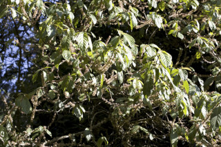
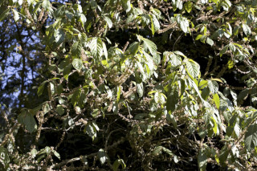
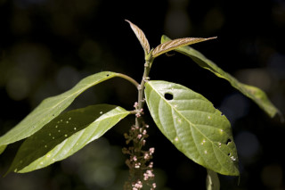
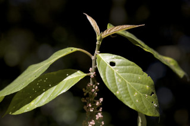

| Leaves : | Leaves simple , alternate , spiral , clustered at twig ends; stipule lanceolate , caducous and leaving scar ; petiole 1-3.7 cm long, canaliculate or flat above, minutely grey pubescent ; lamina 10-20 (25) x 2.5-6.4 cm, narrow elliptic to oblanceolate , apex caudate or caudate - acuminate , base subacute to cuneate , margin entire or crenulate towards apex , chartaceous , white pubescent on midrib and nerves beneath; midrib flat above; secondary_nerves 5-8 pairs, ascending, lower most pair opposite ; tertiary_nerves reticulo-percurrent . |


 


 
